Blueprint
Creative · darkA pen plotter inks a part in the margin
Each one moves with your agent, then settles when the turn is done.
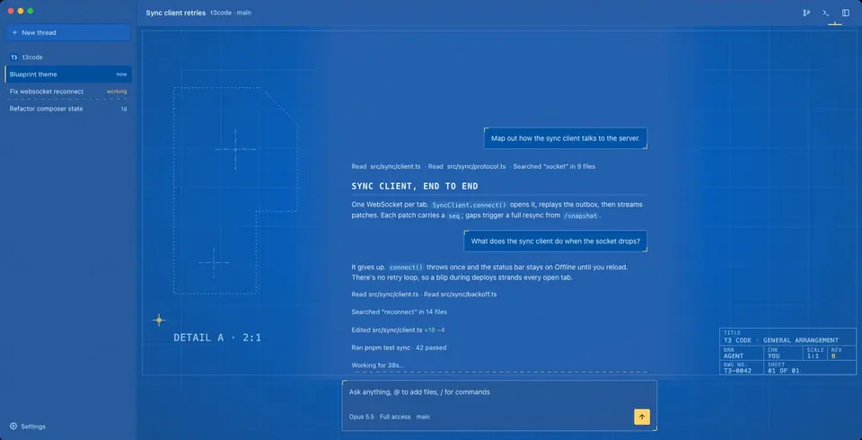
A cyanotype theme for T3 Code. While your agent works, a pen plotter inks a part in the margin. When the turn ends, the sheet holds still.
A pen plotter inks a part in the margin
A pen plotter inks a part in the margin
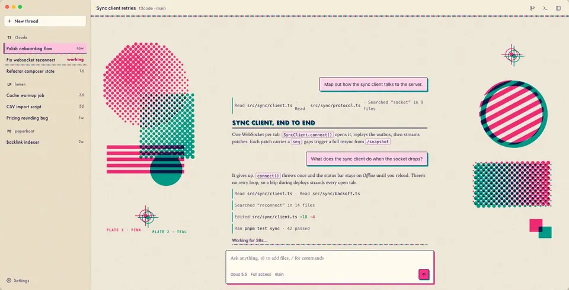
Two ink plates slip out of register
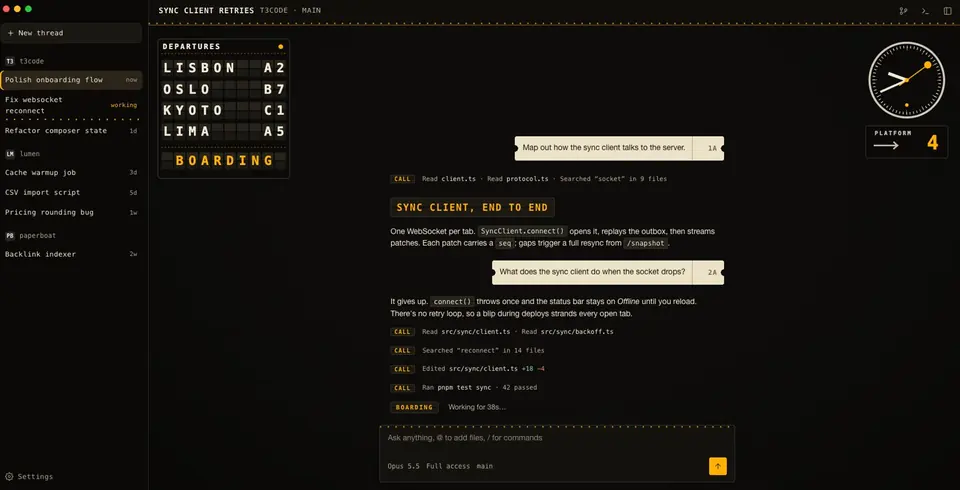
A split-flap board rattles to BOARDING
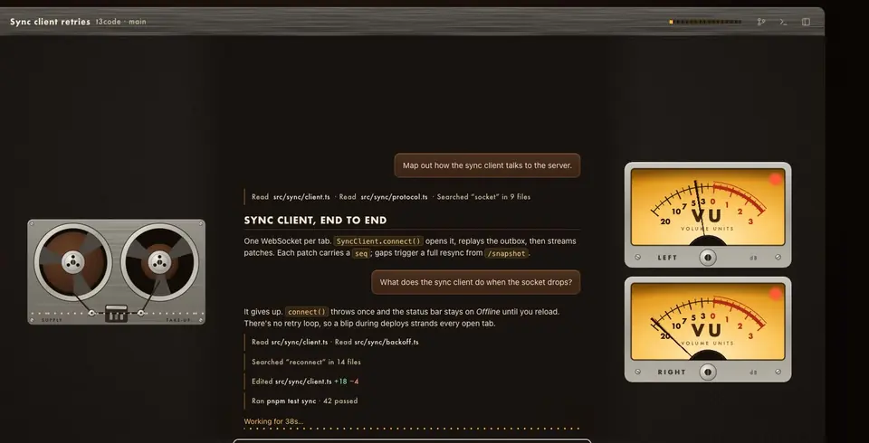
VU needles bounce and the reels turn
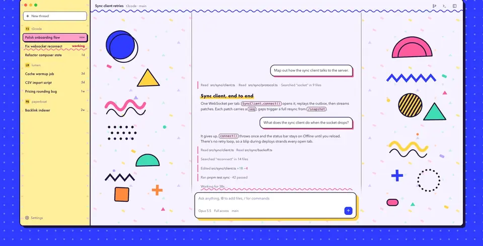
Memphis confetti bobs and tumbles
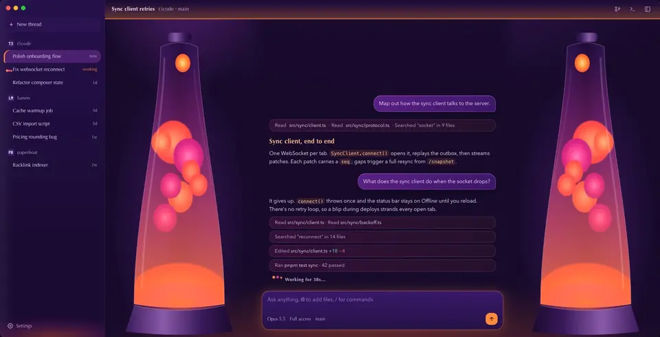
Wax lamps heat up and rise
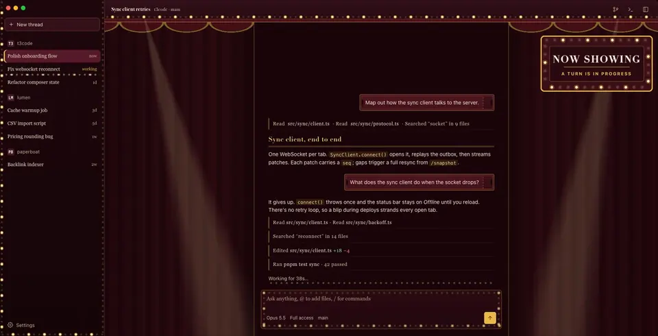
House lights dim and the bulbs chase
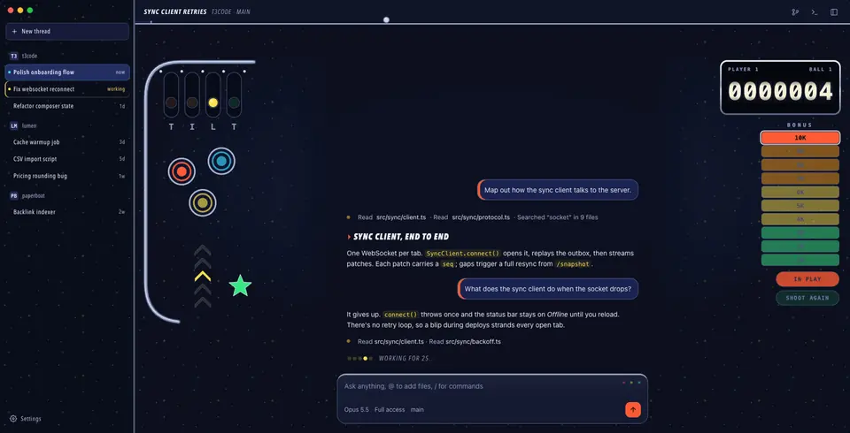
Pinball lights run and the score counts up
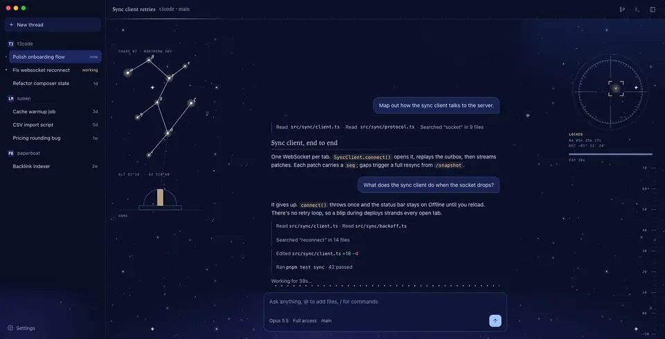
Star plates draw while a reticle tracks
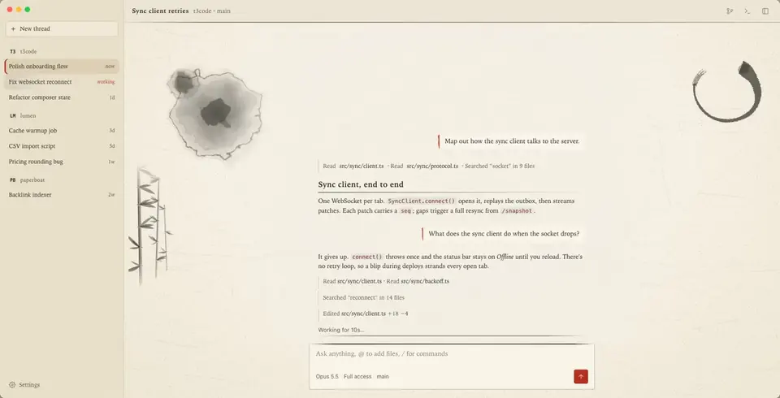
Ink blooms, and a seal stamps at the end
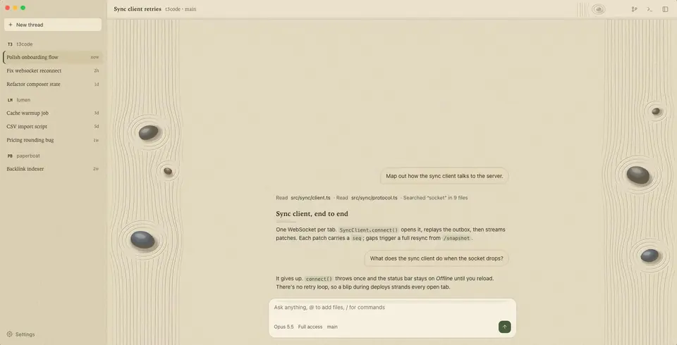
A rake draws furrows around the stones
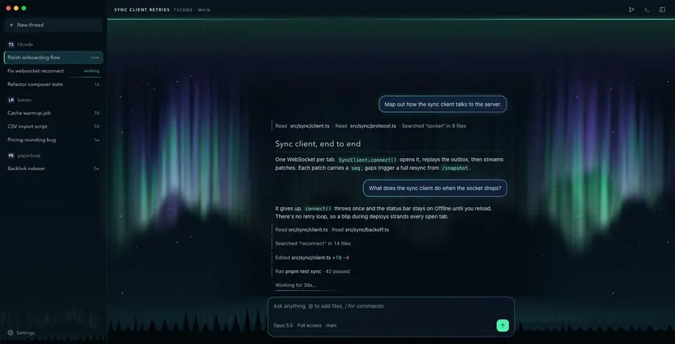
Curtains of light swell overhead
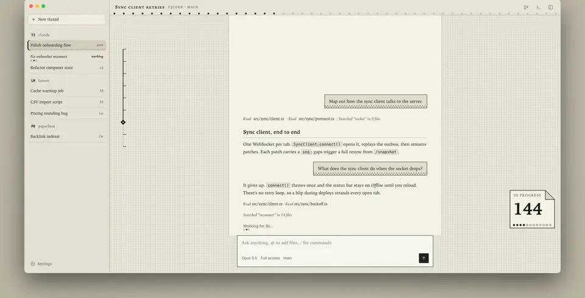
E-paper dots fill in whole steps
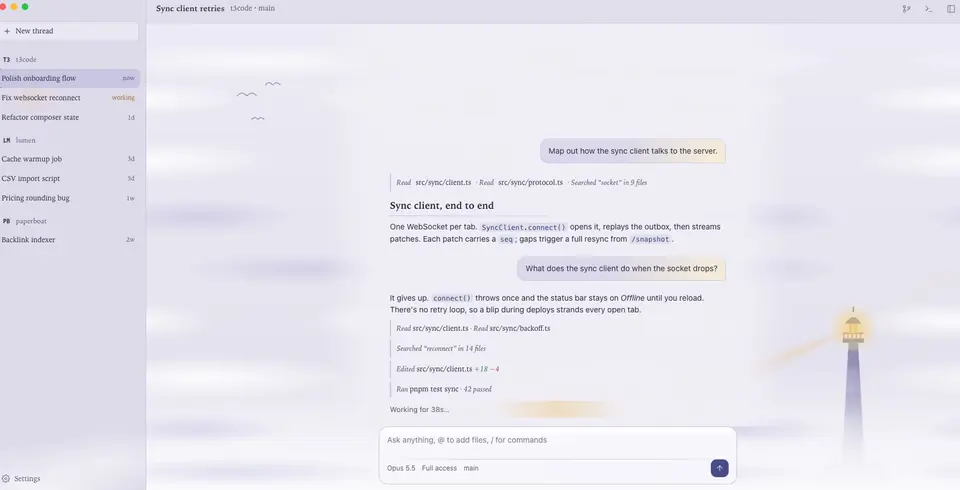
A lighthouse beam sweeps through mist
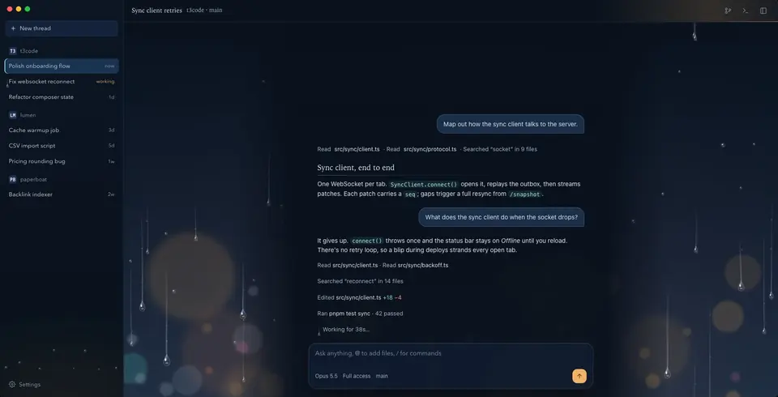
Rain thickens on a night window
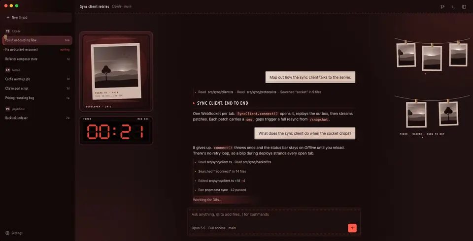
A print develops under the safelight
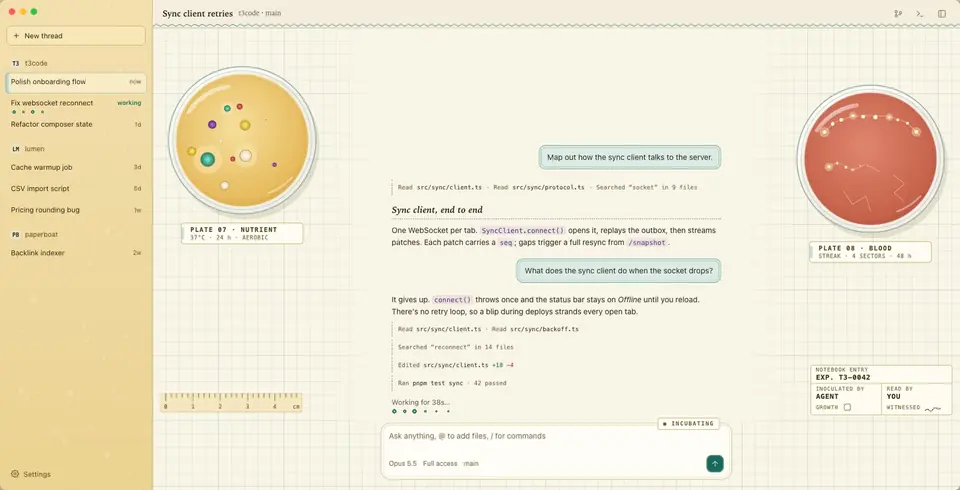
Colonies grow on culture plates
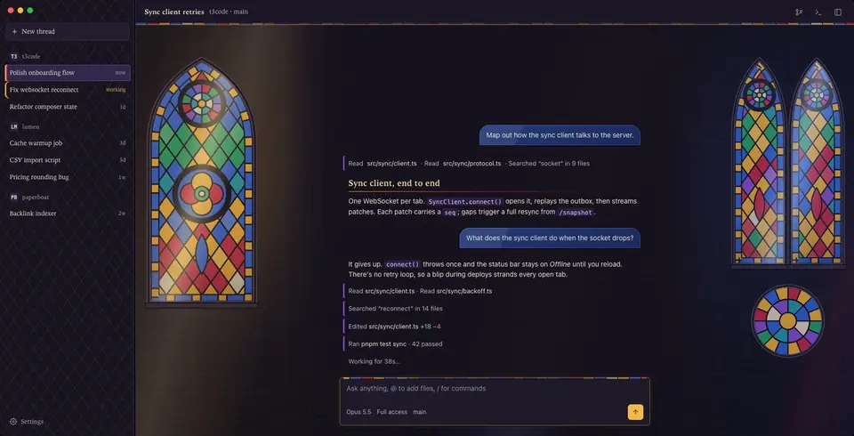
Stained glass kindles and light shafts cross
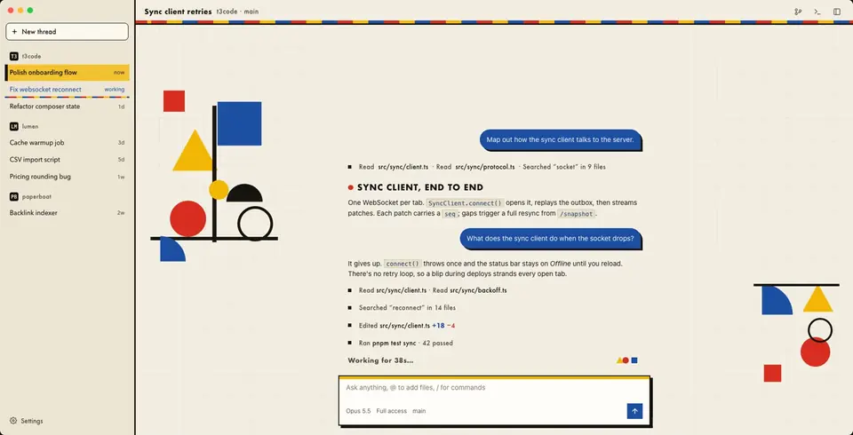
Bauhaus shapes recompose
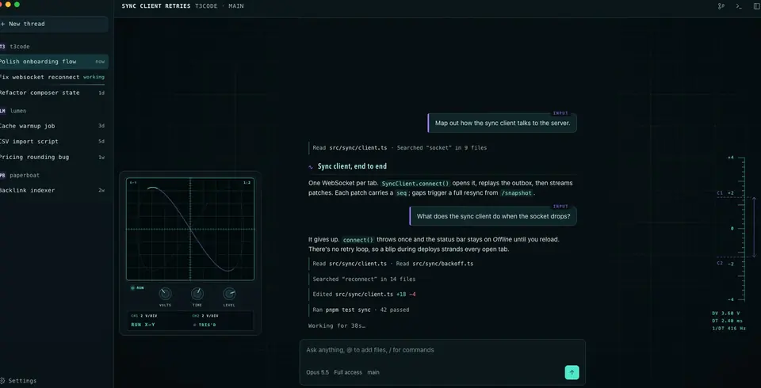
An oscilloscope traces Lissajous figures
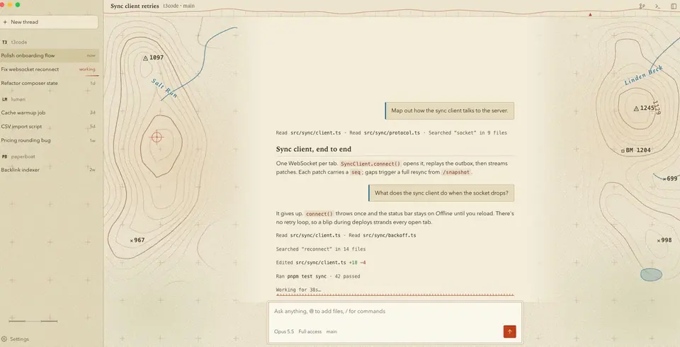
Map contours shift, and a pin drops at the end